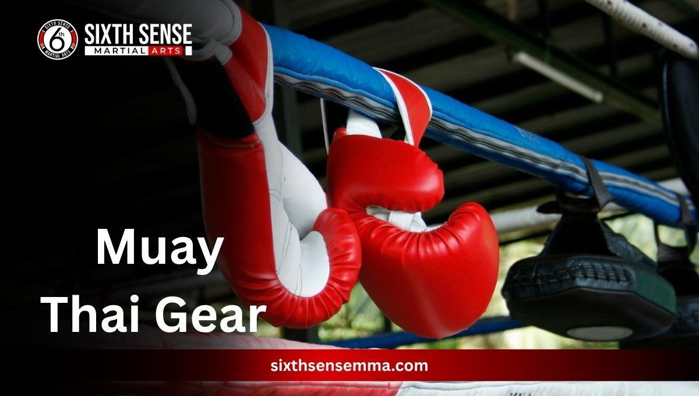
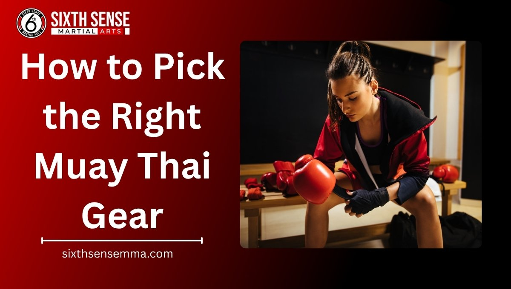
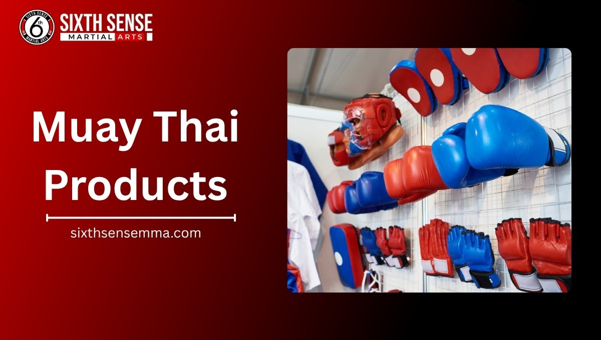

Best Muay Thai Gear for Beginners join today

Getting into muay thai can feel exciting especially if you’re a beginner or stepping up as a pro. Right gear makes all the difference whether you’re training hard or just starting out. Muay thai gear covers everything from gloves to shin guards designed to keep you safe and ready. Today let’s talk about what this gear is why it matters and how to choose the best stuff for your journey. From authentic muay thai pieces to top brands like Fairtex there’s a lot to explore. Let’s dive in!
What is Muay Thai Gear?
Muay thai gear is the essential equipment you need for training or fighting. It starts with bag gloves perfect for sparring or hitting the bag. Shin guards protect your legs during kicks while muay thai shorts give you that free movement. Hand wraps add support and a mouthguard keeps your teeth safe. Brands like Yokkao and Fairtex bring authentic designs from Thailand blending tradition with quality. This gear isn’t just for pros; beginners benefit too learning the basics with proper tools. Whether it’s leather gloves or lightweight apparel it’s all about staying comfortable and protected in the gym.
Benefits of Quality Muay Thai Gear
- Better protection: Good gloves and shin guards reduce injury risk letting you train harder without worry.
- Improved performance: Premium muay thai gear like Fairtex shorts boosts your movement and confidence in the ring.
- Longer lasting: Durable equipment saves money over time especially with high-quality leather designs.
- Comfort matters: A well-fitted mouthguard or hand wraps feels great keeping you focused during sessions.
- Safety first: Quality gear from brands like Yokkao lowers the chance of serious hits perfect for beginners or pros.

How to Pick the Right Muay Thai Gear
Choosing the right muay thai gear can seem tricky but it’s worth taking time. Start by checking size and fit nothing beats gear that feels right on your hands or legs. Next look at material and durability; leather or tough fabrics last longer. Also think about your skill level as beginners might need different gloves than seasoned fighters. Let’s break it down to make this easy.
Check Size and Fit
Size and fit are key when picking muay thai gear. Gloves should wrap your hands snugly not too tight or loose. Shin guards need to cover your shins without slipping during kicks. Even muay thai shorts should move with you not bunch up. Try them on if you can or check size charts from brands like Fairtex. Getting this right means better control and comfort every time you train.
Look at Material and Durability
Material makes a big difference in muay thai gear. Leather gloves hold up better than cheap fabrics especially for heavy bag work. Shin guards with sturdy padding last through tough sessions. Look for designs from Thailand or premium options that resist wear. Durable gear saves you from replacing it too soon which is a win for any fighter beginner or pro.
Think About Your Skill Level
Your skill level guides your gear choice. Beginners might start with basic gloves and shin guards focusing on safety. As you grow consider muay thai training gloves for sparring or premium pairs from Yokkao. Pros often pick lightweight authentic designs for better performance. Match your gear to where you are and it’ll support your progress perfectly.
Common Issues with Cheap Gear
Cheap muay thai gear might save you cash upfront but it can cause headaches later. Here’s what to watch out for:
- Poor protection: Thin gloves or shin guards won’t shield you well leaving you open to bruises.
- Quick wear: Low-quality leather tears fast especially during intense training sessions.
- Uncomfortable fit: Baggy shorts or stiff hand wraps make moves awkward and frustrating; choose your muay thai equipment wisely.
- Safety risks: Weak padding increases injury chances which isn’t worth the gamble.
- Bad smell: Cheap materials trap sweat turning your gear into a stink bomb over time.
New Trends in Martial Arts Equipment
Martial arts gear keeps evolving and muay thai is no exception. Lighter materials are popping up making gloves and shin guards easier to wear. Brands are adding breathable fabrics to muay thai shorts keeping fighters cool. Custom designs from Thailand are gaining traction letting you stand out. Plus eco-friendly options are catching on using sustainable leather. It’s exciting to see how this equipment adapts for beginners and pros alike.
Muay Thai Products
We’ve got your muay thai gear covered with top picks. Our selection brings authentic quality to every fighter from newbies to seasoned pros. Check out our gloves shorts and more each piece is designed for the gym or ring. Let’s look at what we offer.

Gloves
Our gloves at Sixth Sense MMA are built for action. Made with durable leather they handle bag work and sparring with ease. Beginners love the comfy fit while pros appreciate the support. Whether you’re into kickboxing or muay thai training these gloves deliver. Pick a pair and feel the difference!
Shorts
Our muay thai shorts at Sixth Sense MMA are a game-changer. Crafted with lightweight fabric they let you move freely during training or fights. The designs come straight from Bangkok, giving that authentic muay thai equipment vibe. Whether you’re a beginner or a seasoned fighter these shorts hold up well. Pick your favorite color of muay thai equipment and hit the gym with confidence!
Shin Guards
Shin guards are a must and ours at Sixth Sense MMA don’t disappoint. Made with tough padding they protect your legs during kicks and sparring. Perfect for muay thai or kickboxing they fit snugly without slowing you down. Beginners and pros alike trust these for solid defense. Grab a pair and train worry-free!
Headgear
Headgear from Sixth Sense MMA keeps you safe in the ring, a crucial piece of muay thai equipment. Built with durable materials it cushions blows during intense sessions. It’s great for muay thai training offering a secure fit for all skill levels. Whether you’re new or a pro this gear adds peace of mind. Try it out and feel the difference!
Hand Wraps
Hand wraps are essential and ours at Sixth Sense MMA deliver. Made from soft yet sturdy fabric, these muay thai gloves support your wrists and knuckles. Ideal for boxing gloves or muay thai gear they’re easy to wrap. Beginners find them simple to use while pros rely on the comfort. Get a set of muay thai gloves and protect your hands today!
Ankle Supports
Ankle supports at Sixth Sense MMA keep you steady. Designed with flexible material they brace your ankles during tough workouts. Perfect for muay thai or martial arts they prevent twists and sprains. Whether you’re starting out or a veteran these supports help. Slip them on and move with ease!
Mouthguards
Our mouthguards at Sixth Sense MMA are a smart pick. Crafted from premium material they shield your teeth during sparring. Great for muay thai or boxing gear they mold to your mouth for a snug fit. Beginners and pros both love the safety they bring. Grab one and train with confidence!
Groin Protectors
Groin protectors from Sixth Sense MMA offer vital protection. Made with tough yet comfy material they guard against low blows. Ideal for muay thai training or fights they fit securely under shorts. Newbies and experienced fighters rely on them. Add this to your gear and stay safe!
Benefits of Choosing Sixth Sense MMA
Picking Sixth Sense MMA means more than just signing up for classes. You get a spot in a welcoming group that pushes you toward real change. Here martial arts build your body and mind turning everyday doubts into solid self-belief. Kids gain tools against bullies while adults find sharper focus and calm in tough spots. Instructors partner with you offering hands-on help in small groups. Plus free open mats let families join in making growth a shared thing. It’s about feeling secure no matter your starting point, especially with the right muay thai equipment. Overall this place crafts a stronger you step by step.
How We Handle Your Training Needs
We start simple at Sixth Sense MMA matching classes to where you stand right now. Beginners jump into intro sessions that ease you in while advanced folks tackle deeper drills. Daily 60-minute workouts cover everything from basic moves to full sparring all with a nod to mental sharpness. Instructors like Coach Mattheus keep things personal spotting what you need and adjusting on the fly. Families can mix in with special programs and open mats add that extra practice time. Your goals drive it all whether it’s fitness self-defense or just building grit. We keep it steady and supportive so progress feels natural.
Why Pick Sixth Sense MMA for Authentic Gear
Authentic gear shines at Sixth Sense MMA pulling straight from Thai roots to fuel your muay thai sessions. We stock Fairtex and Yokkao pieces that pros swear by ensuring every glove or short feels true to the art. Beginners get reliable basics without fluff and our setup ties gear to real training vibes. It’s not just buying stuff; it’s grabbing tools like muay thai gloves that match the discipline we teach. With a focus on quality and fit you train like a nak muay from day one. Choose us and that authentic edge becomes part of your routine.
Benefits to Choosing Sixth Sense MMA
- Confidence boost: Training here sharpens your gut feel helping you handle real-life curveballs with ease.
- Family-friendly: Programs pull everyone in from kids dodging bullies to parents getting fit together.
- Personalized touch: Small classes mean instructors spot your strengths and fix weak spots right away.
- Life skills gain: Beyond punches you learn calm thinking and quick decisions that stick outside the gym.
- Community vibe: Open mats and group energy make you feel backed no solo grind.
Customer Reviews
Stacie Arce
“My son has been coming since December and grown so much. Coach Matheus is a jiu jitsu master from Brazil but more important than that, he is a skilled coach. He really makes the place special.”
Danilo De souza
“Family friendly and professional. My kids love Coach Matheus and Coach Milly. They’ve grown so much in confidence and discipline learning with them! 100% recommended!”
Márcio Rabelo
“Such a good vibe at this gym. Everyone’s super friendly and the coaches really know their stuff. It’s one of those places you feel comfortable right away with Coach Matheus, great mix of hard work and fun. Definitely worth checking out if you’re into Jiu Jitsu!”
juwaryiyya
“Extremely welcoming staff, the coach explained everything so well. It is the favorite part of my day! I also feel very comfortable as a Muslim woman because of how the room is shaped like an L giving privacy and comfort for sisters.”
Kaivan Askari
“Professor Matheus is amazing with the kids. His children’s classes are amazing. He also has a very consistent teaching style for adults as well.”
Contact Us
Got a question or ready to start your journey? Our team at Sixth Sense MMA is here for you, day or night. Located at 817 S MacArthur Blvd #100, Coppell, TX 75019, we’re just a step away. Ring us up at 469-972-7800 or shoot an email to info@sixthsensemma.com someone’s always around to chat. Need a quick answer? Drop by during our open hours, and we’ll sort you out. Our crew loves helping, whether it’s about classes or that free trial you’ve been eyeing. If any doubt pops up, don’t wait reach out, and let’s get you moving!
Conclusion
Wrapping up the right muay thai gear sets you up for wins big or small, just like a champion in Top King. From snug gloves to tough shin guards quality picks like ours at Sixth Sense MMA keep you moving forward. Skip the cheap stuff that lets you down and grab authentic tools that match your fire. Whether you’re new or grinding as a pro we’ve got the support to lift you higher. Ready to level up? Drop by for a free trial and see the spark ignite. Your stronger self waits just take that first kick.
Follow Us on Social Media
Stay connected with Sixth Sense MMA through our social media channels. Follow us for class updates, training tips, and a closer look at our self defense community.
FAQ’s
Beginners need essential Muay Thai gear including gloves, shin guards, hand wraps, mouthguards, shorts, and ankle supports. Each item plays a key role in keeping you safe and improving performance during training. Sixth Sense MMA offers authentic Muay Thai equipment from trusted brands like Fairtex and Yokkao.
Quality gear ensures protection, comfort, and longer durability. High-end gloves and shin guards reduce the risk of injuries, while breathable Muay Thai shorts and wraps enhance movement. Investing in premium gear also saves money over time by avoiding early wear and tear.
Fit is everything. Gloves should wrap your hands snugly without feeling tight, and shin guards must stay secure without slipping. Always check brand size charts—Fairtex, for instance, provides detailed fitting guides. A proper fit boosts both comfort and control during kicks or strikes.
Look for genuine leather or durable synthetic leather when buying Muay Thai gloves. For shin guards, dense foam padding is ideal. Shorts made from lightweight, breathable fabric work best for mobility and comfort. Authentic Thai brands offer great craftsmanship and longevity.
Cheap gear may wear out quickly, offer poor protection, and cause discomfort. Thin padding, weak stitching, and bad odor from low-quality materials are common issues. In the long run, poor gear can lead to injuries or frequent replacements—making quality a smarter choice.
Train with us in Coppell
The first class is free. Shorts, a t-shirt and a water bottle. We lend the rest.
Book a free class